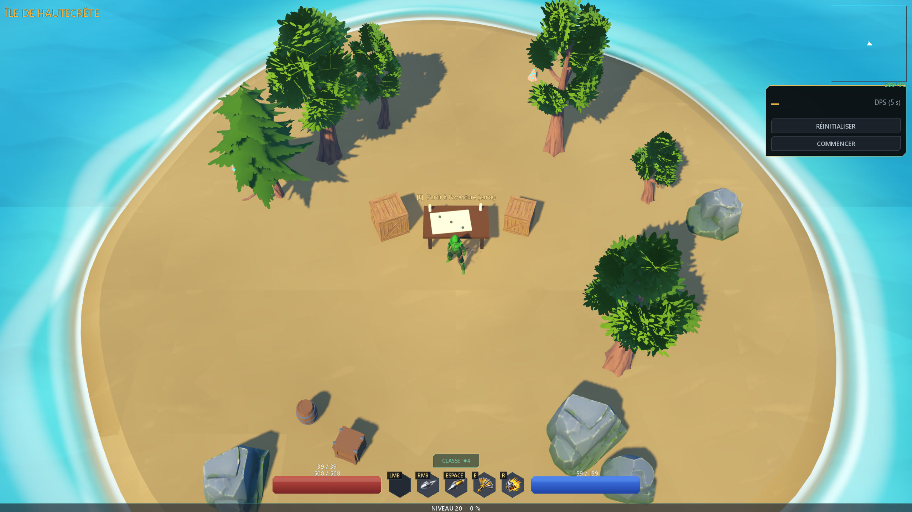
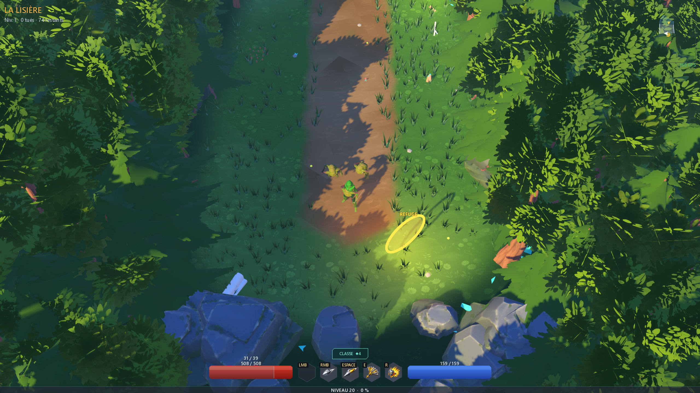
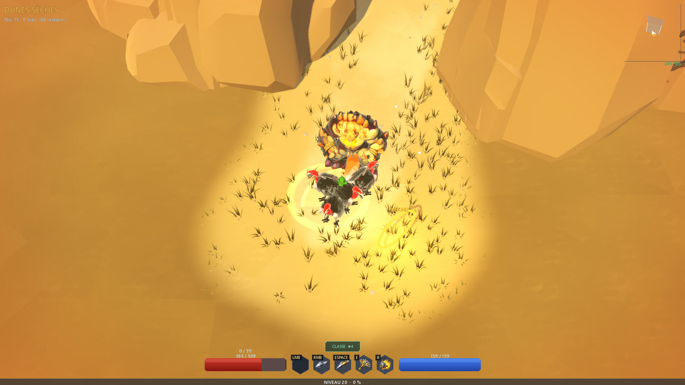
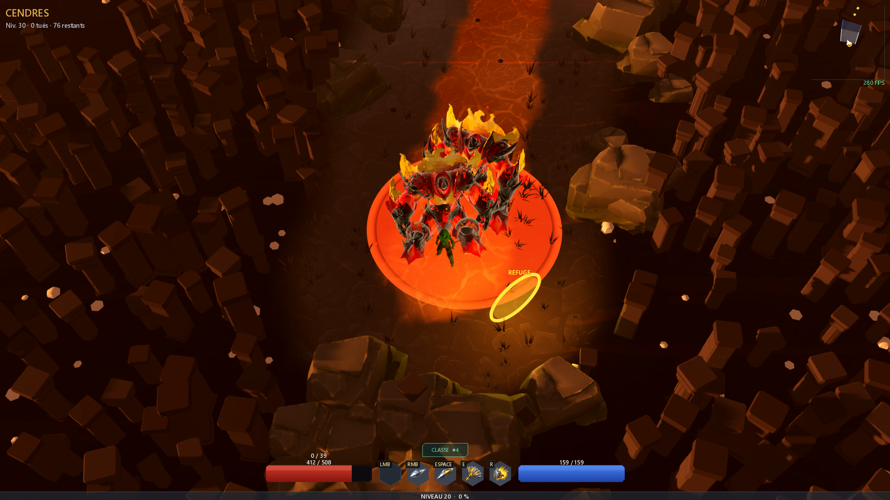
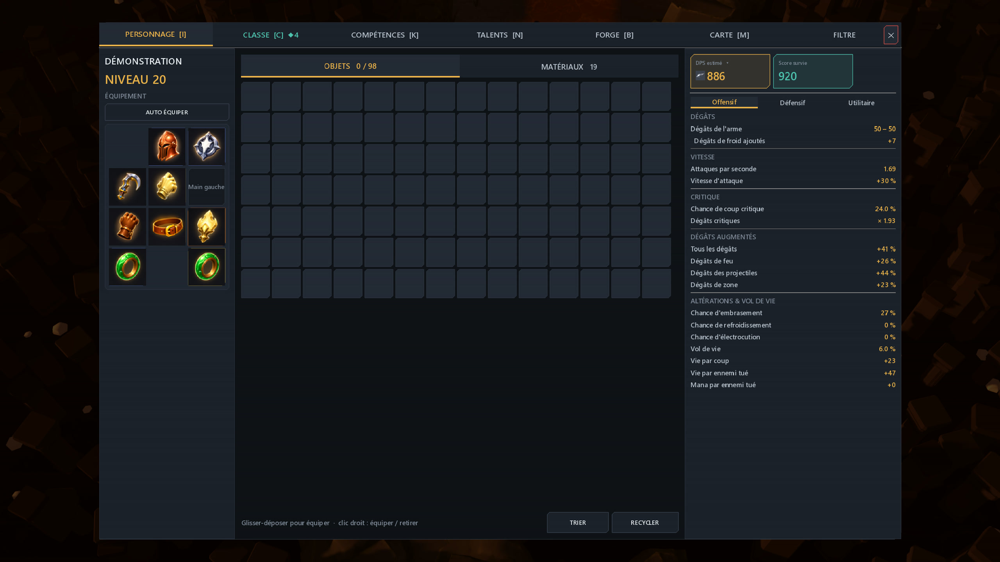
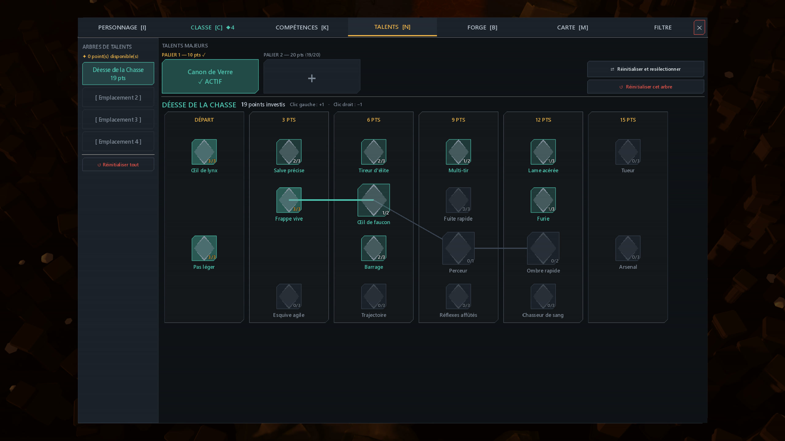
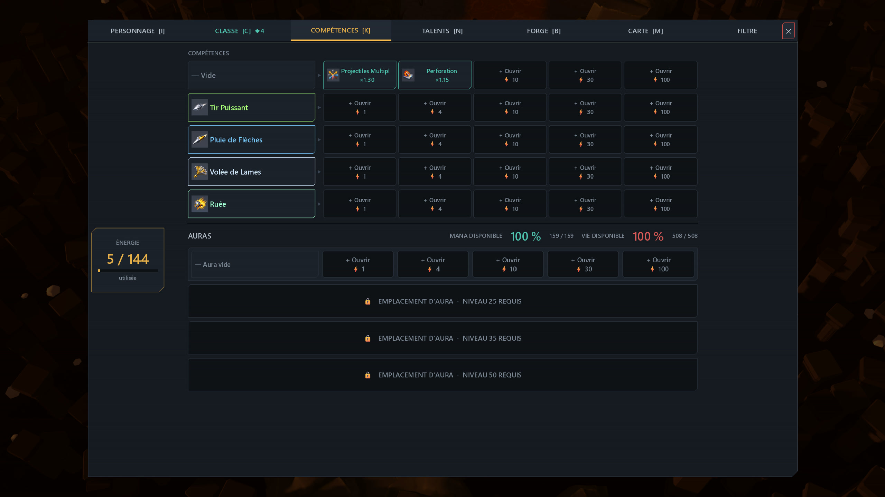
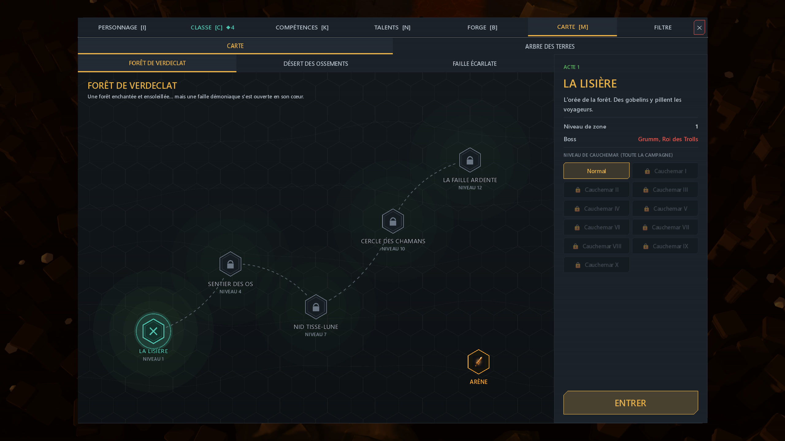

Gardien de braise, arcaniste, rôdeuse, invocateur, pyromancien, tisse-givre, mande-tempête, porte-peste. Une ressource par classe, une mécanique par classe, et une couleur pour se reconnaître dans la mêlée.
Un sort de base, puis des supports qui changent sa géométrie : plus de projectiles, chaîne, zone élargie, dégâts convertis. Les mauvais mariages se voient tout de suite.
Des points à chaque niveau, des nœuds qui ne font pas la même chose, et le droit de se tromper : le respec est là.
Raretés, affixes, objets légendaires avec un effet qui ne sort d'aucun barème. Chaque ramassage compare avec ce que vous portez.
Recyclage, retrait et ajout d'affixes, montée en rareté. De quoi sauver une base correcte au lieu de la jeter.
Un donjon bouclé se relance avec des modificateurs tirés au moment d'ouvrir la carte. Le même couloir, deux fois, ne se joue pas pareil.
Des vagues, des élites, une vague record qui reste affichée. C'est là qu'on va tester si la build tient.
Télégraphes au sol par type d'attaque, dégâts abrégés, minimap qui suit vraiment les murs. Ce qui tue, on le voit venir.
Version 0.5.0, Windows 10/11 64 bits. Gratuit.
Un fichier de 1,2 Go. Double-clic, ça se lance : pas d'installateur, pas de launcher, pas de compte.